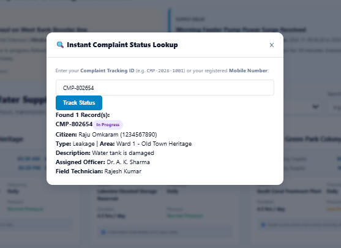
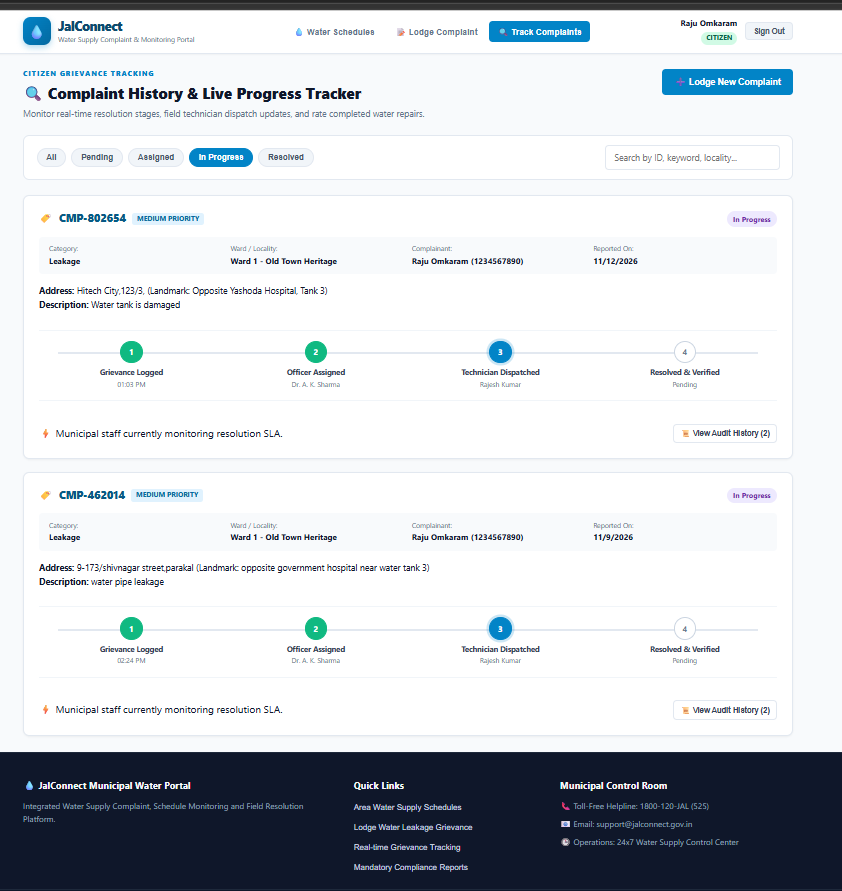
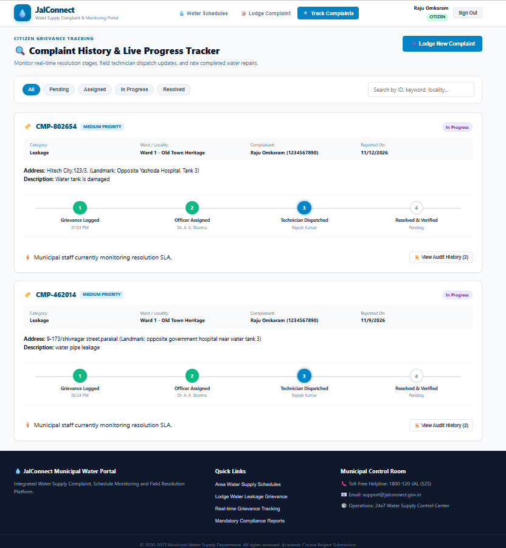
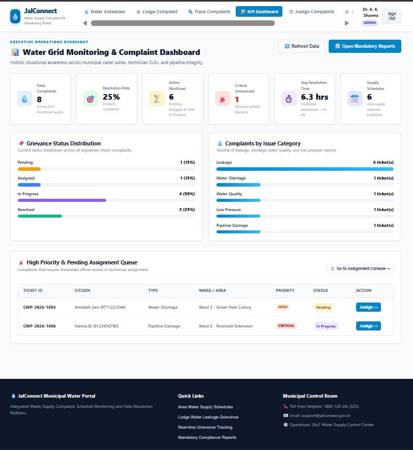
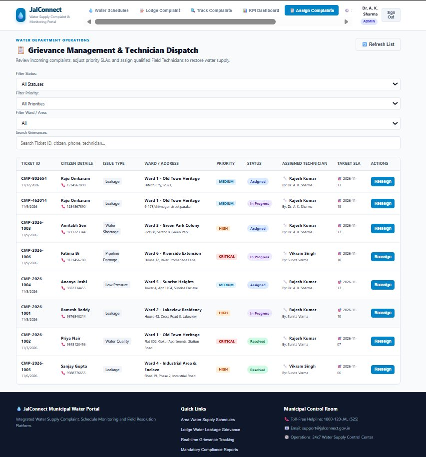
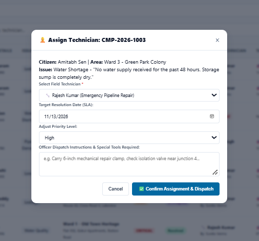
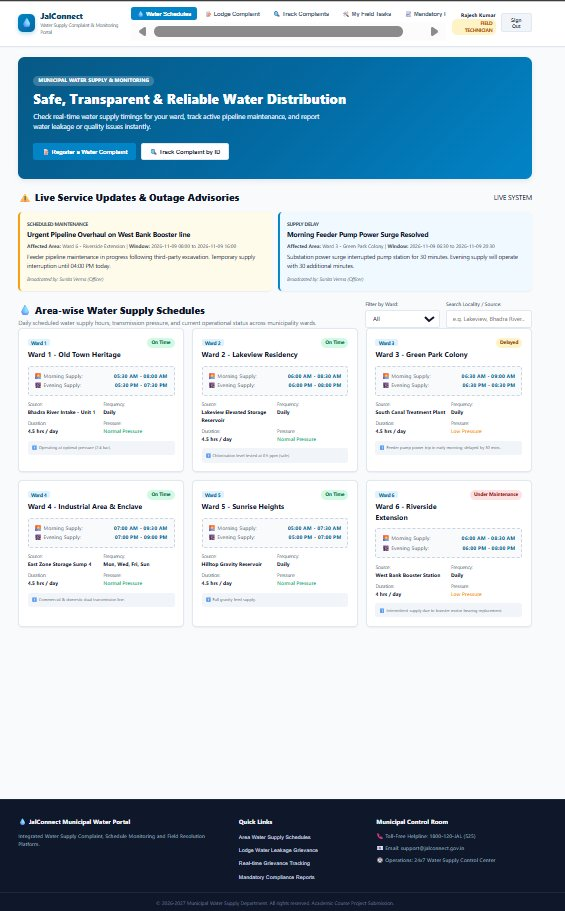

Name: O.Narasimha Raju
Roll.No: 2303A53034
Batch: 46
JalConnect — Water Supply Complaint and Monitoring Portal is a full-stack DevOps and web application built to streamline municipal water distribution monitoring, citizen grievance registration, officer task dispatching, and field technician resolution tracking.
| Layer | Technologies Used | Purpose |
|---|---|---|
| Frontend | React 19, Vite 8, Responsive CSS | 9 role-based interactive screens with manual JWT authentication |
| Backend API | Node.js, Express 5, JWT, bcryptjs | RESTful APIs for auth, complaints, schedules, alerts, and 4 reports |
| Database | MongoDB 8.0 (Mongoose) + In-Memory Fallback | Persistent storage with automatic resilient fallback store |
| Containerization | Docker, Multi-stage Nginx, Docker Compose | Isolated multi-container stack with service healthchecks |
| Orchestration | Kubernetes (Deployments, Services, PVC, Ingress) | Scalable cluster deployment in the water-portal namespace |
Citizens can lodge water complaints (Leakage, Water Shortage, Water Quality, Low Pressure, Pipeline Damage), look up any ticket publicly by Complaint ID or mobile number, and track their complaints across a 4-stage visual stepper (Grievance Logged → Officer Assigned → Technician Dispatched → Resolved & Verified).



Administrators have full oversight over municipal operations through the KPI Monitoring Dashboard (total complaints, resolution rate, active workload, critical unresolved issues, average resolution time) and can filter, prioritize, and assign field technicians with target SLA dates.



Field Technicians sign in with role-based credentials to view ward-level water supply schedules, active maintenance advisories, and their dedicated My Field Tasks queue where they log on-site actions, materials consumed, and mark tickets resolved.

The application implements all 4 required operational reports with CSV export and print-ready PDF views:
DevOps Pipeline: Both backend (Node.js 22 Alpine) and frontend (multi-stage Nginx) include
Dockerfile definitions orchestrated via docker-compose.yml alongside production-ready
Kubernetes manifests in k8s/ (Namespace, Deployment, Service,
PersistentVolumeClaim, ConfigMap, Secret, and Ingress).